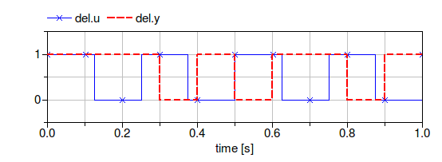

Collection of models that illustrate model use and test models
This package contains examples for the use of models that can be found in Buildings.Controls.Discrete.
Extends from Modelica.Icons.ExamplesPackage (Icon for packages containing runnable examples).
| Name | Description |
|---|---|
| Example model for boolean delay |
 Buildings.Controls.Discrete.Examples.BooleanDelay
Buildings.Controls.Discrete.Examples.BooleanDelay
Example model for boolean delay

Example that demonstrates the use of the boolean delay block. The output signal of the block is delayed by one sampling interval to produce a response as shown in the figure below in which the sampling interval is 0.1 second, as indicated by the markers.

Extends from Modelica.Icons.Example (Icon for runnable examples).